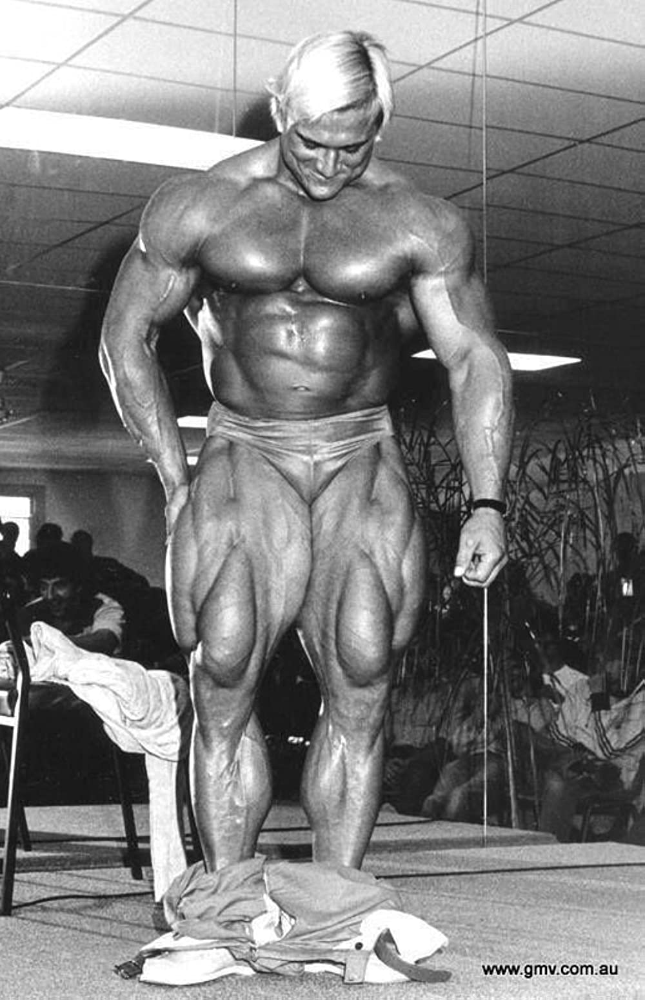

1. Начинай с разминки
Перед тренировкой ног особенно важно подготовить суставы и мышцы:
5–10 минут лёгкого кардио (велотренажёр, беговая дорожка)
вращения коленей, тазобедренных и голеностопных суставов
активация ягодиц (резинки, мост)
Разминка снижает риск травм и повышает эффективность тренировки.
2.Делай упор на базовые упражнения
Основу тренировки должны составлять многосуставные движения:
приседания
жим ногами
выпады
румынская тяга
Они задействуют сразу несколько мышечных групп и дают максимальный рост силы и массы.
3. Прорабатывай все мышцы ног
Правильная тренировка ног включает:
квадрицепсы — приседания, разгибания ног
бицепс бедра — румынская тяга, сгибания ног
ягодицы — hip thrust, выпады
икры — подъёмы на носки
Игнорирование одной из групп приводит к дисбалансу и травмам.
4. Следи за техникой
Основные правила техники:
спина ровная, корпус стабильный
колени движутся по линии носков
вес распределён на всю стопу
движение контролируемое, без рывков.
Лучше снизить вес, чем выполнять упражнение неправильно.
5. Работай в правильном диапазоне повторений
В зависимости от цели:
сила: 4–6 повторений
набор мышц: 8–12 повторений
выносливость и форма: 12–15 повторений
Оптимально: 3–4 подхода на упражнение.
6. Используй полный диапазон движения
Приседай до комфортной глубины, растягивай мышцы в нижней точке и полностью сокращай их в верхней.
Полная амплитуда ускоряет рост мышц и улучшает мобильность суставов.
7. Не забывай про восстановление
Ноги — крупная мышечная группа, им нужно время:
тренируй ноги 1–2 раза в неделю
отдых между тренировками — минимум 48 часов
сон 7–9 часов
Рост происходит во время восстановления.
8. Тренируй икры отдельно
Икроножные мышцы быстро адаптируются к нагрузке:
тренируй их 2–3 раза в неделю
используй высокий объём повторений (12–20)
делай паузу в верхней точке
9. Постепенно увеличивай нагрузку
Для прогресса необходима прогрессивная перегрузка:
увеличивай вес
добавляй повторения
улучшай технику
Даже небольшой прогресс = шаг к результату.
10. Слушай своё тело
Боль в мышцах — норма, боль в суставах — сигнал остановиться.
Если есть дискомфорт — снизь нагрузку и проверь технику.